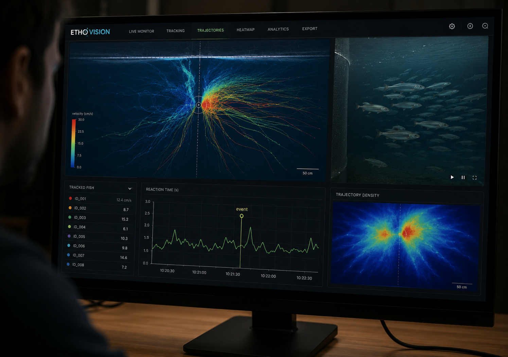
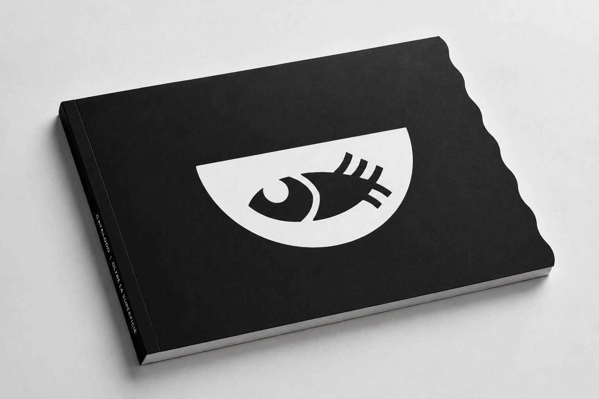
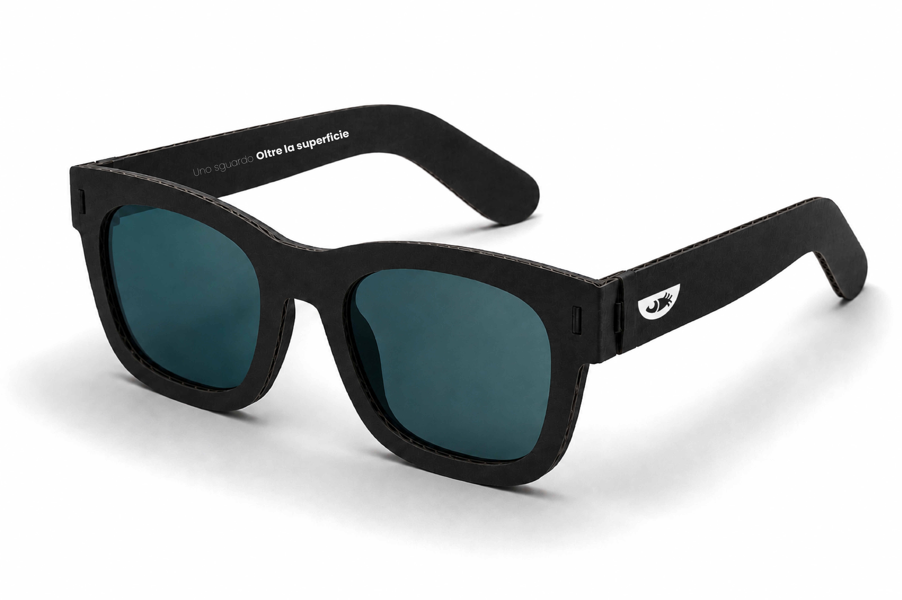
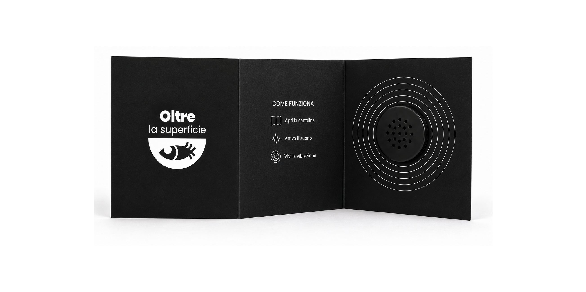

Oltre la superficie
Dispositivo di bio-design e condizionamento etologico ad accesso esclusivo
I corpi idrici non sono fondali inerti, ma ecosistemi vivi che registrano i traumi del presente.
Per tre mesi, la sala ipogea del Museo Archeologico “G. Rambotti” si sottrae allo sguardo umano e viene restituita alla fauna ittica del Lago di Garda. Tra le memorie delle palafitte riaffiora un’antica alleanza tra uomo e acqua, ma ora il museo cambia, tace, arretra e respira attraverso correnti, luci, vasche e ombre. I pesci non osservano: attraversano, sentono, apprendono.
Oltre la superficie è un gesto di cura verso ciò che abbiamo dimenticato: il lago come corpo vivo, fragile, ferito.
Il luogo
Museo Civico Archeologico "G. Rambotti" - Desenzano del Garda (BS)
Situato all'interno di un chiostro del XVII secolo, il Museo Civico "Giovanni Rambotti" custodisce una delle più importanti collezioni europee di reperti palafitticoli dell'Età del Bronzo.
La vicinanza al lago, l’oscurità e il silenzio della sala inferiore rendono questo spazio ideale per accogliere temporaneamente Oltre la superficie, in dialogo con la fauna ittica del Garda.

Target
La fauna ittica divisa in tre gruppi biocentrici in base alla colonna d'acqua e alla profondità d'azione lacustre.
Pesci Pelagici
Specie associate allo strato epilimnico, caratterizzato da maggiore illuminazione, temperature più elevate e alta disponibilità di ossigeno.
Cinematica
Il movimento è continuo e
prevalentemente orizzontale, finalizzato alla ricerca di plancton e
alla fuga rapida. La coordinazione nel banco consente spostamenti
efficienti e riduce il rischio predatorio.
Apparato percettivo
L’apparato sensoriale è adattato a un
ambiente con luce intensa, riflessi variabili e alta visibilità. La
percezione di vibrazioni
e segnali visivi favorisce l’orientamento e la coesione del gruppo.
Psicologia nello spazio
In uno spazio aperto e privo di
riferimenti,
il comportamento dipende dalla prossimità sociale e dalla coesione
del banco.
L’isolamento può generare stress, mentre il gruppo offre orientamento e protezione.

Pesci del termoclino
Specie che occupano la fascia metalimnica, dove si registra un marcato gradiente termico tra acque superficiali e profonde.
Cinematica
GI pesci della fascia intermedia adottano un nuoto
regolare,
continuo ed energeticamente efficiente. Le traiettorie ampie
e coordinate consentono di seguire le correnti, ridurre lo sforzo muscolare
e mantenere una distribuzione spaziale stabile nel gruppo.
Apparato percettivo
L’apparato sensoriale è specializzato per
ambienti
a luce filtrata e basso contrasto. La visione privilegia
le lunghezze d’onda verde e blu-verde, mentre la sensibilità termica permette di
orientarsi lungo i gradienti di temperatura.
Psicologia nello spazio
La percezione dello spazio è organizzata
attorno a gradienti,
contrasti e riferimenti verticali tra acque più calde e più fredde.
Stimoli artificiali intensi o intermittenti possono alterare l’orientamento,
compromettendo coordinazione e stabilità comportamentale.

Pesci Bentonici
Specie tipiche dell’ipolimnio, lo strato più profondo del lago, dove prevalgono bassa illuminazione, temperature più stabili e una stretta relazione con il fondale.
Cinematica
Nell’ipolimnio, la limitata disponibilità trofica
favorisce strategie motorie improntate al risparmio energetico. Il
movimento risulta lento, controllato e prevalentemente associato al fondale, che
costituisce un riferimento spaziale stabile in condizioni di scarsa visibilità.
Apparato percettivo
La ridotta penetrazione della luce determina
una minore centralità della percezione visiva. L’orientamento dipende soprattutto
dalla linea laterale, dalla sensibilità pressoria e dalla capacità
di rilevare micro-vibrazioni e variazioni ambientali.
Psicologia nello spazio
Lo spazio profondo viene interpretato
attraverso segnali meccanici, tattili e pressori più che visivi.
Stimoli artificiali intensi, come rumori a bassa frequenza o vibrazioni anomale,
possono compromettere l’orientamento e indurre condizioni di stress
comportamentale.

Le Sfide Percettive
Disorientamento spaziale
Il passaggio dall’ambiente lacustre a vasche artificiali introduce geometrie, superfici trasparenti e limiti spaziali non interpretabili dal pesce, favorendo collisioni, perdita di orientamento e stress da confinamento.
Shock fisico e ambientale
La variazione di pressione, vibrazioni e rumore altera l’equilibrio idrostatico e sensoriale dell’animale. Le onde meccaniche prodotte da impianti, passi e traffico possono interferire con la linea laterale.
Dissonanza percettiva
Luci, riflessi, immagini e segnali progettati per la percezione umana possono risultare ecologicamente incoerenti per il pesce, generando abbagliamento, confusione percettiva e disorientamento comportamentale.
Infrastruttura di collegamento
Come l'architettura tecnica bypassa la superficie urbana per connettere biologicamente l'ecosistema del lago alla sala ipogea.
Sistema di ingresso
Il trasferimento della biomassa dalla presa lacustre alla sala ipogea avviene in circa 4 ore, tramite un flusso idrodinamico continuo a bassa velocità, calibrato per evitare urti, stress meccanici e variazioni termiche repentine.
Il prelievo della biomassa avviene attraverso 3 tubi di aspirazione idrodinamici, collocati a profondità diverse per intercettare specie differenti senza shock termici.
| Tubo | Profondità | Diametro |
|---|---|---|
| Epilimnio | -5 metri | 50 cm |
| Metalimnio | -25 metri | 50 cm |
| Ipolimnio | -60 metri | 50 cm |
L’ingresso è controllato da sensori biomorfici capaci di riconoscere la sagoma dei pesci. In caso di ingresso di un predatore, come il Luccio, il sistema devia automaticamente l’animale verso un’uscita.

Come vengono attirati i pesci?
Reotassi positiva
Una corrente artificiale di 0,2 m/s spinge i pesci a nuotare controcorrente, trasformando il transito in una risalita migratoria.
Disssonanza percettiva
L’imboccatura dei tubi utilizza luci calibrate: blu-verde 480 nm per i Pelagici e quelli del termoclino, debole luminescenza UV per il Carpione.
Rinforzo olfattivo
Nei condotti viene immessa acqua del Garda arricchita con amminoacidi naturali estratti da chironomidi e micro-crostacei, creando una scia percettiva che guida i pesci verso il museo.
Ciclo Temporale
36 Ore di Ciclo Esclusivo
Ogni fascia ecologica occupa l'intero spazio museale per un turno esclusivo, calibrato sulla pressione idrostatica e termica di provenienza.
2 Ore di Reset Tecnico
Al termine di ogni ciclo, le vasche variano parametri e filtri per prepararsi alla specie successiva.
Circuito delle Quattro Vasche
I rischi antropici tradotti in segnali percettivi comprensibili dai pesci.
Inquinamento acustico
La vasca educa il pesce a riconoscere vibrazioni, rumore e geometrie frammentate come segnali di instabilità, orientandolo verso aree più silenziose, uniformi e sicure.

Inquinamento luminoso
La vasca associa la luce calda intermittente a una condizione di disturbo, mentre il blu attinico stabile diventa un riferimento percettivo di protezione.

Perdita di habitat
La vasca stimola la ricerca di habitat complessi, ricchi di canneti, radici, ombre e micro-rifugi, contrapponendoli a spazi nudi, instabili e privi di riferimenti.

Specie invasive
La vasca addestra il pesce a interpretare una sagoma geometrica di minaccia come segnale predatorio, favorendo una risposta di fuga rapida verso il rifugio.

Materiali e Ambiente Controllato
Ogni componente strutturale risponde a precisi standard di biocompatibilità ittica ed ecologica.
| Componente | Materiale Impiegato |
|---|---|
| Pareti interne tubi | HDPE nero opaco goffrato |
| Fondo delle vasche | Resina epossidica miscelata con sedimenti del Garda |
| Pareti esterne | Acrilico strutturale con pellicole dicroiche antiriflesso |
| Schermature | Bio-fibra di canapa stampata in 3D macro-porosa |
Riconversione Museografica
L'edificio storico e la sala ipogea sotterranea vengono radicalmente modificati a livello infrastrutturale per ospitare la biomassa lacustre senza interferenze esterne.
- Isolamento Acustico Integrale: Installazione di pannelli fonoassorbenti ad alta densità e supporti elastici.Il rumore ambientale viene mantenuto rigidamente sotto i 30 dB.
- Controllo luminoso: La sala ipogea viene immersa in una condizione di oscurità quasi totale. L'unica luce proviene dai sistemi LED subacquei calibrati nelle singole vasche.
- Pedane tecniche: Integrazione di pedane strutturali per accogliere i sistemi nascosti di ricircolo, filtraggio meccanico, ossigenazione e controllo termico.
Tracciamento Biometrico
L’installazione integra un sistema di monitoraggio etologico basato su Computer Vision, posizionato sul soffitto della sala ipogea.
Mappatura delle traiettorie
I movimenti della fauna ittica nello spazio vengono catturati ed elaborati in heatmaps, utili a individuare le aree di maggiore permanenza e verificare l’efficacia delle zone sicure.
Tempo di Reazione Formale
Il sistema calcola e registra la rapidità con cui il banco o i singoli esemplari modificano la propria traiettoria di nuoto in risposta alla comparsa del pericolo.

Mediazione e merchandising per Umani
Il pubblico umano è fisicamente confinato al piano terra, pertanto l'allestimento si traduce all'esterno tramite elaborati grafici e strumenti di alterazione sensoriale.

Catalogo
Leggi dettagli ↓Il catalogo diventa in questo contesto il principale dispositivo di mediazione, permette al pubblico escluso di ricostruire, immaginare e comprendere ciò che accade nello spazio riservato alla fauna ittica.

Lenti del Garda
Leggi dettagli ↓Le Lenti del Garda sono degli occhiali montati su una struttura in cartone nero rigido, dotati di lenti cromatiche filtrate che modificano lo spettro visivo umano, privilegiando le tonalità fredde blu-verdi e avvicinando l’esperienza percettiva a quella delle specie ittiche del Garda.

Piegascolta
Leggi dettagli ↓Il Piegascolta è una cartolina sonora che, aprendosi, attiva vibrazioni basse e disturbanti ispirate a eliche, motoscafi e traffico nautico. Traduce il rumore umano in esperienza fisica, restituendo ciò che per i pesci diventa allarme, corrente e oscillazione invisibile.